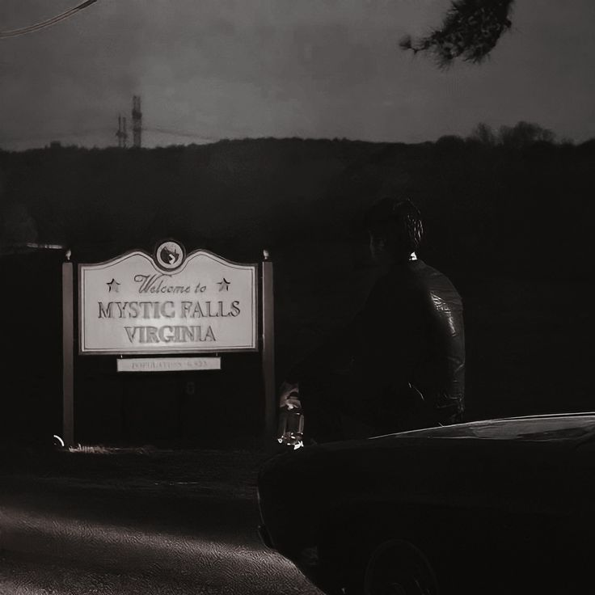
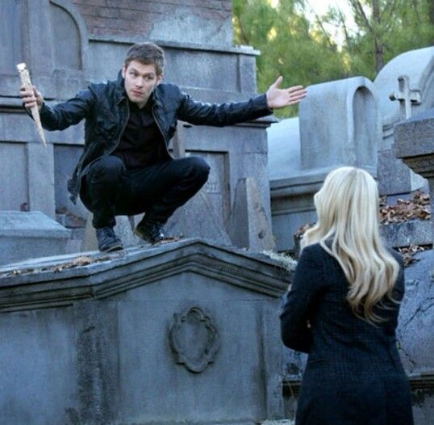
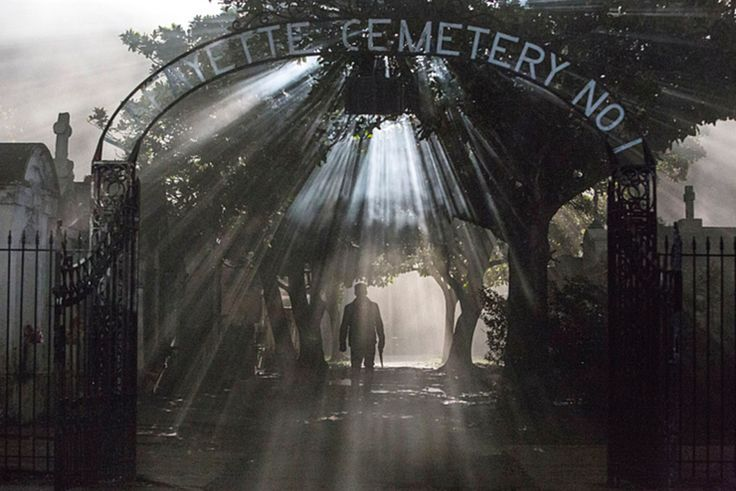

Há muito tempo procuro uma cidade ao redor do mundo na qual realmente existam seres sobrenaturais. Já fui em Salém, Rosewood, Greendale e até em Aokigahara, a então cidade mais assombrada do mundo e não encrontrei nada. Recentemente, olhando as notícias no feed, acabei encontrando duas cidades que estão tendo vitímas de ataque animal, o que é bem típico em filmes sobrenaturais e o que me deixou mais ansioso em visitar as duas, mas estou em dúvida de qual eu poderia ir
Você escolheu ir para Mystic Falls e chegando lá, você vai direto para sua casa, na qual você deixou alugada por precaução. Era noite e ao olhar para a casa ao lado, Você avista uma linda jovem dos olhos e cabelos castanhos, ela estava conversando com um homem, o qual se camuflava nas sombras, mas Você notou que ele era alto e moreno e parecia estar em uma discussão com a garota.
Você escolheu ir para Nova Orleans e chegando lá, Você percebe que é uma cidade muito festiva, Você chega de noite e está cansado, então como não havia reservado um lugar para passar a noite, avista um quartel, que aparenta ter vários quartos. Assim que entra, não acredita no que está vendo, há vampiros por toda a parte e estavam atacando os turistas que ali estavam. Quando se vira, se preparando para sair discretamente, uma mulher loira, dos olhos azuis e com um belo vestido preto surge em sua frente quase que instantaneamente.
Você foi ver do que se tratava a discussão, mas quando está chegando perto é abordado por uma garota loira dos olhos azuis, ela tapa sua boca e Você consegue ver o nome dela em seu crachá, “Caroline”.
Você entra em sua casa e tem uma ótima noite de sono. No outro dia, acorda, anda pela cidade, não acha nada de interessante e vai embora.Você tenta sair correndo mas logo é pego por um cara moreno e dos olhos castanhos, que se intitula Elijah, irmão da loira. Ele percebe que Você aparenta ser uma pessoa boa e te solta, dando um pouco de sangue a Você, Depois dele apertar seu pescoço. logo depois ele apaga sua memória e te manda embora.
Você inicia uma conversa com a mulher que se auto intitula “Rebekah”. Tu diz que estava a procura de seres sobrenaturais, mas que não queria se envolver tão de perto assim. A mesma te entende e te deixa sair de lá, mas te ameaça a não voltar mais pra lá.
Como Você não foi afetado, com medo, decide tirar uma bomba de fumaça que havia trazido e taca no chão, trazendo uma neblina e dando tempo de sair correndo. Chegando lá fora, encontra um homem loiro e dos olhos azuis, que se intitula "Klaus", imediatamente ao te ver, vem em sua direção e se alimenta de Você, depois, quebra seu pescoço e Você cai morto no chão. Quando acorda, percebe sua situação, estava em transição de humano para vampiro.
Ao entrar na igreja, vê uma guerra de bruxas, 4 delas contra 1 garota e por incrível que pareça, a garota as levita e quebra o pescoço das 3, as matando. Logo depois ela te avista e vai até Você.
Ao te durrubar no chão, o cara que estava conversando com a garota na casa ao lado percebe a situação e vem tão rápido que nem Caroline consegue o impedir, ele quebra seu pescoço, te matando. Eles entram em uma discussão e o cara se intitula “Damon”. Logo a garota “Elena” da sacada e um novo cara “Stefan” vinham para apaziguar a discussão entre os dois.
Você acaba chegando nos fundos de um bar e lá ataca uma bartender loira, ela se chama Camille, de acordo com seu crachá. Ela até tenta se defender, mas não consegue. Você tinha acabado de se transformar em um vampiro completo e só tinha mais uma escolha a fazer, dar seu sangue a ela ou a deixar morrer.
Você a salva dando seu sangue a ela, assim, explica a ela o que está acontecendo e ela o agradece e pede para que seja transformada também, pois estava sozinha e havia perdido todo mundo. Assim, Você transforma ela Você a deixa morrer e vai embora.